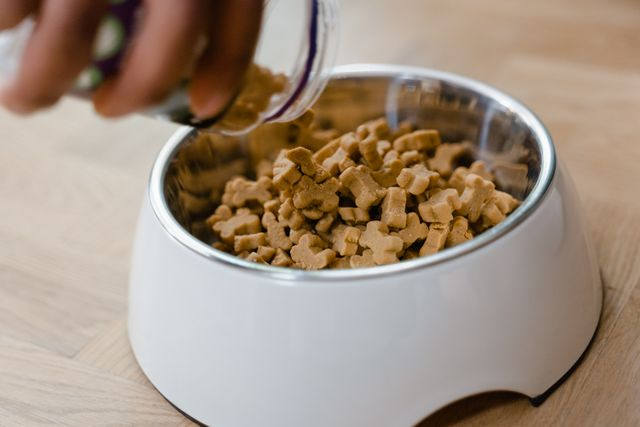
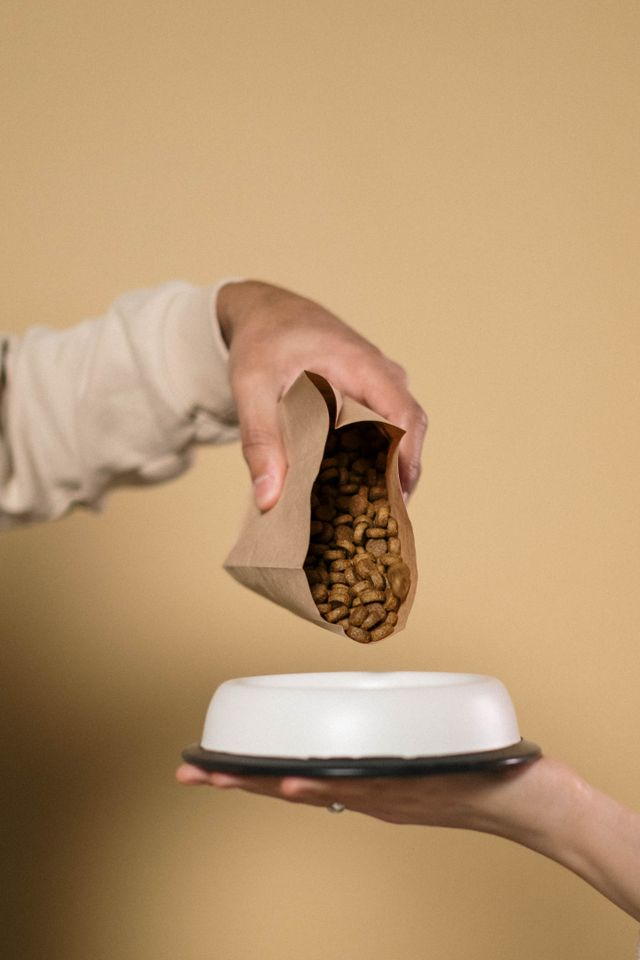
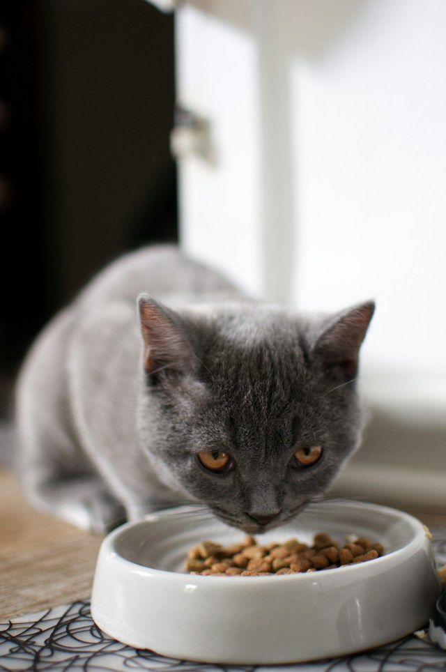
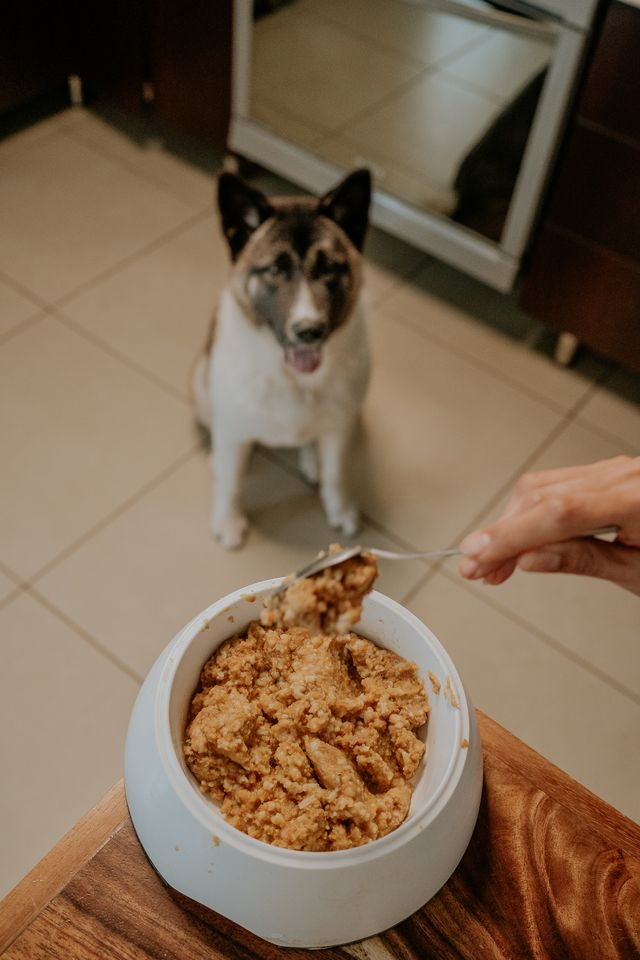
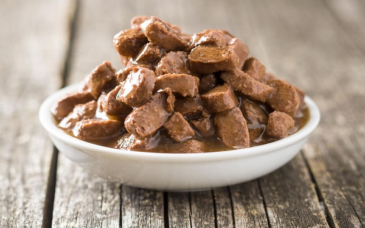
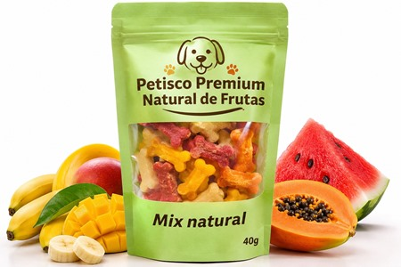
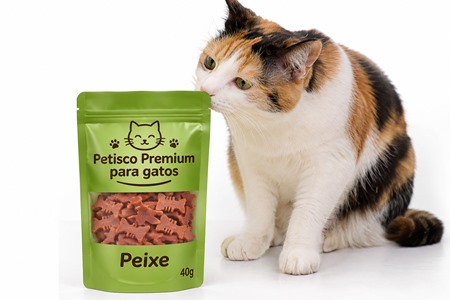

Rações não-perecíveis, sachê e petiscos
Rações não perecíveis para cães
Petly NutriDog Adult
 Cuidado e qualidade na alimentação de todos os dias.
Cuidado e qualidade na alimentação de todos os dias.
Uma opção premium para acompanhar a rotina alimentar dos cães adultos.
R$ 124,90
Informações adicionais
- Indicação: cães adultos.
- Tipo: ração seca.
- Embalagem: 2 kg.
Petly Nutri Puppy Premium

Nutri Puppy Premium para cães filhotes.
Alimento desenvolvido para a fase de crescimento de cães filhotes.
R$ 119,90
Informações adicionais
- Indicação: cães filhotes.
- Tipo: ração seca.
- Embalagem: 2 kg.
Rações não perecíveis para gatos
Petly NutriCat Adult

Uma escolha especial para a rotina do seu felino.
Alimentação seca voltada às necessidades de gatos adultos castrados, integrando cuidado e praticidade ao dia a dia.
R$ 119,90
Informações adicionais
- Indicação: gatos adultos castrados.
- Tipo: ração seca.
- Embalagem: 1,5 kg.
Ração Petly Kitten Premium

Para os pequenos felinos que estão descobrindo o mundo.
Uma opção premium de alimentação para acompanhar a fase de crescimento dos gatos filhotes.
R$ 129,90
Informações adicionais
- Indicação: gatos filhotes.
- Tipo: ração seca.
- Embalagem: 1,5 kg.
Sachês
Sachê Premium para cães adultos

Um toque especial na hora da refeição.
Uma alternativa de alimento úmido para diversificar a experiência alimentar dos cães adultos.
R$ 7,00 a unidade
Informações adicionais
- Indicação: cães adultos.
- Apresentação: alimento úmido em sachê.
- Embalagem: 85g.
Sachê Premium para gatos

Maior variedade para o momento favorito do seu felino.
Alimento úmido que oferece uma alternativa para complementar a variedade de opções na rotina alimentar dos gatos.
R$ 7,00 a unidade
Informações adicionais
- Indicação: gatos.
- Apresentação: alimento úmido em sachê.
- Embalagem: 85g.
Petiscos
Petisco de frutas

Um agrado diferenciado e saudável.
Petisco natural de frutas para cães, pensado para proporcionar um momento especial de carinho e recompensa.
R$ 15,00 a unidade
Informações adicionais
- Indicação: cães.
- Apresentação: petisco de frutas.
- Embalagem: 40g.
Petisco para gatos

Um mimo especial para os apaixonados por sabores do mar.
Petisco premium, perfeito para oferecer ao seu gato em momentos de interação.
R$ 15,00 a unidade
Informações adicionais
- Indicação: gatos.
- Sabor: peixe.
- Embalagem: 40g.